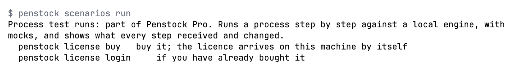

Guide / Plans, privacy and help
Plans and licence
Penstock is free, and what only Penstock does is Pro or Team. One rule decides which one a feature needs.
Choose a plan
Free
No charge
The editors, checks, deploy, Monitor, export, share and import. Every new machine also starts with 30 days of Pro.
Get PenstockPro
USD 9.00 per month
USD 90.00 per year
For your own machine. Adds what only Penstock does: auto layout, flow analysis, code links, test-case runs, the visual diagram diff and more.
Buy ProTeam
USD 29.00 per seat per month
USD 290.00 per seat per year
Everything in Pro, inside a pipeline as well: the review bot, pull request reports, baselines and SARIF.
Buy TeamThe price you pay is the one shown at checkout. You choose monthly or yearly at checkout. A Buy button opens the checkout on Polar's own page. See Security and privacy.
The one rule
Everything that earlier releases had, and everything other tools give away, is free. What only Penstock does is Pro or Team.
A paid feature needs Pro on your own machine and Team inside a pipeline. A pipeline is any run where the environment variable CI is set. There are no exceptions for a single feature or a single flag.
Every machine starts with 30 days of Pro. A pipeline gets no trial.
What each plan gives
| Plan | What it includes |
|---|---|
| Free |
In the editors: the BPMN, DMN and form editors, the properties panels, element templates and the connector browser, scripts in a code editor of your tool, token simulation, the diagram check with the drawing and the bpmnlint rules, deploy, Monitor, export, the hand-drawn look, opening a run that already exists, going from a Camunda 7 delegate to its class or bean, sharing a diagram as one HTML file, and importing from draw.io, Visio, Signavio and Bizagi. The Camunda 7 to Camunda 8 analysis and its report are free too. The command palette and every action in it, the sidebar, the check card and the Problems tab, transaction boundaries, the first-run tour, and the findings in your tool's own Problems window. On the command line: The MCP tools |
| Pro on your machine |
|
| Team in a pipeline |
Everything in Pro, inside a pipeline. That includes the review bot in pull and merge requests, the pull request report, check baselines, and findings as SARIF or GitHub annotations in the code review. Every paid command in a pipeline needs Team. |
Not sure what a page needs? The tag under its title says. Free means free. Pro means a paid feature.
What you see when you reach a paid feature
Nothing else in the editor changes. When you reach for a paid feature you do not have, Penstock explains what it does and offers to buy it or to sign in, at that moment.
- In an editor, a dialog says, for example, Auto layout is part of Penstock Pro. and offers Buy Pro, I Already Bought It and Not Now. If your trial has ended it says so.
- In a terminal, the command prints what the feature gives and the commands
penstock license buyandpenstock license login. In a pipeline it says the feature needs Team and to give the pipeline a key inPENSTOCK_LICENSE. - An MCP tool called without the licence says the same in its error result. It also shows in the tool list with a note on what it needs.

Paying
Payments are handled by Polar, the reseller and merchant of record. Polar also takes care of VAT and invoices. You can cancel at any time from the link in the receipt. After you pay, Penstock notices by itself and sends a sign-in code to the address that paid. There is no key to copy. One key covers three machines, and you can cancel at any time. Team is priced for each seat, and its seats are given out in Polar's customer portal. See Buying and signing in.
How the licence is checked
The licence is a signed token, not a flag. A small licence service turns Polar's answer into a token signed with a key only it holds, and the plugin, the command line and the editor carry the public half and check the signature themselves, offline. A file edited by hand, a redirected address or a server pretending to be the licence service cannot make a machine Pro.
What is on the machine is the token and nothing else: no key, no tier, no date you could edit. penstock license says which licence this machine has and where it comes from, and during the trial it says the trial is on and until when, instead of saying there is no licence. See Buying and signing in.
Free Pro for students, teachers and open-source maintainers
Students, teachers and open-source maintainers can get Pro for free. Penstock shows it in three places, and only when the application address is set: the licence dialog, the message that explains a paid feature, and the output of penstock license. While no address is set, nothing about it is shown anywhere. See Buying and signing in.
Common problems
- A feature that worked yesterday now asks me to buy Pro.
- Your 30-day trial has ended, or your licence was released or ended. Run
penstock licenseto see which licence this machine has. - It works on my laptop but the pipeline says it needs Team.
- That is the rule: a pipeline needs Team for every paid feature.
penstock init --ciwrites a pipeline for the licence on the machine that ran it, so its first run does not fail on something nobody bought. - Which plan do I need for the review bot?
- Team in a pipeline. Pro is enough to run it on your own machine.